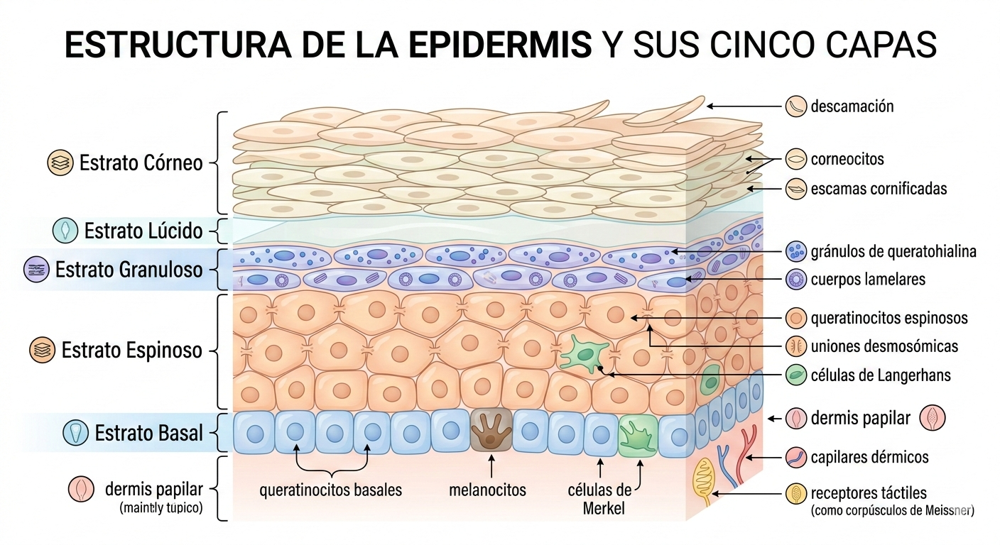
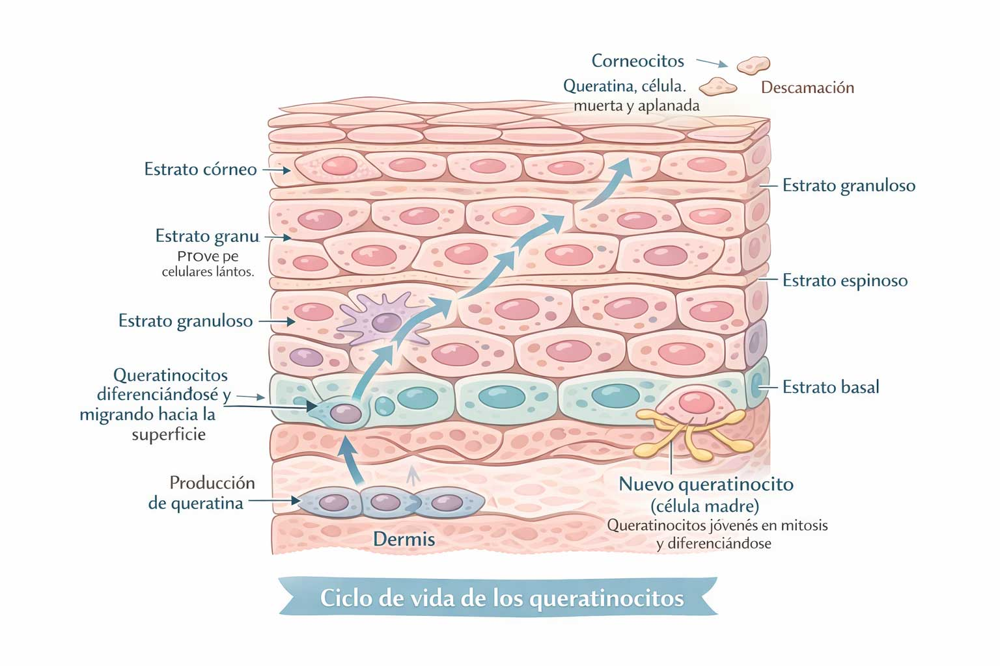
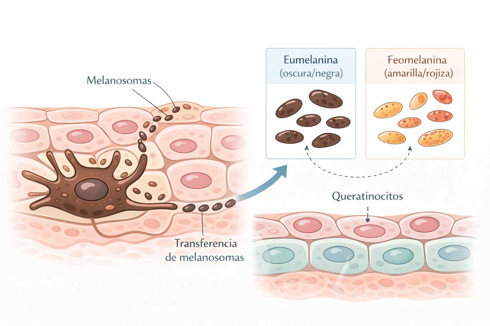

Epidermis

La epidermis es la capa más externa de la piel. Está formada por cinco estratos: basal, espinoso, granuloso, lúcido y córneo. No contiene vasos sanguíneos ni terminaciones nerviosas. En ella se llevan a cabo dos procesos esenciales: la queratinización y la melanogénesis.
Capas internas de la epidermis y células clave
El estrato basal es la capa más profunda y contiene:
- Queratinoblastos: precursores de los queratinocitos.
- Melanocitos: producen melanina.
- Células de Merkel: relacionadas con la percepción táctil.
Encima se encuentra el estrato espinoso, rico en queratinocitos unidos por desmosomas y en células de Langerhans, fundamentales en la defensa inmunitaria.
Queratinocitos: los constructores de la epidermis
Son las células más abundantes. Producen queratina blanda y ascienden desde el estrato basal hasta el córneo en un ciclo de 28–45 días. En su etapa final se convierten en corneocitos.
Sus membranas contienen acuaporinas, canales que permiten el paso de agua, minerales y vitaminas.

Melanocitos: los productores de pigmento
Producen melanina a partir de tirosina mediante la enzima tirosinasa. Existen dos tipos principales:
- Eumelanina: marrón oscuro o negra.
- Feomelanina: amarilla o rojiza.
La actividad melanocítica depende de factores genéticos, hormonales y ambientales como la radiación UV y la luz visible.

Células de Langerhans: defensa inmunitaria
Detectan microorganismos, los capturan y los presentan a los linfocitos T en los ganglios linfáticos, activando la respuesta inmunitaria.

Estrato córneo: la barrera protectora
Es la capa más externa y está formada por:
- Corneocitos: células sin núcleo que forman la barrera física.
- Lípidos cementantes: ceramidas, colesterol y ácidos grasos.
- Factor Natural de Hidratación (FNH): sustancias que retienen agua.
Lípidos cementantes
Rellenan los espacios entre corneocitos. Incluyen ceramidas, colesterol y ácidos grasos saturados y poliinsaturados. Regulan la pérdida de agua transepidérmica (TEWL).
Factor Natural de Hidratación (FNH)
Formado por aminoácidos, sales minerales, urea, lactatos y componentes del sudor. Mantiene la hidratación del estrato córneo.
Manto hidrolipídico
Película protectora ligeramente ácida formada por sebo, sudor y productos de la queratinización. Mantiene el equilibrio de la microbiota y define el tipo de piel.
← Volver a Estructura de la piel